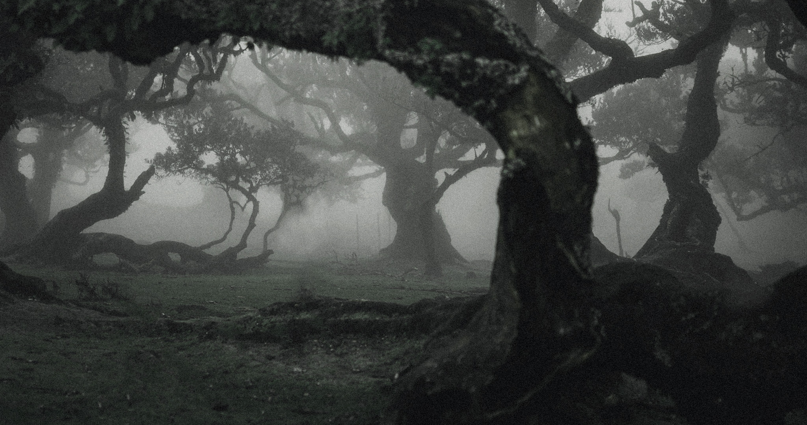
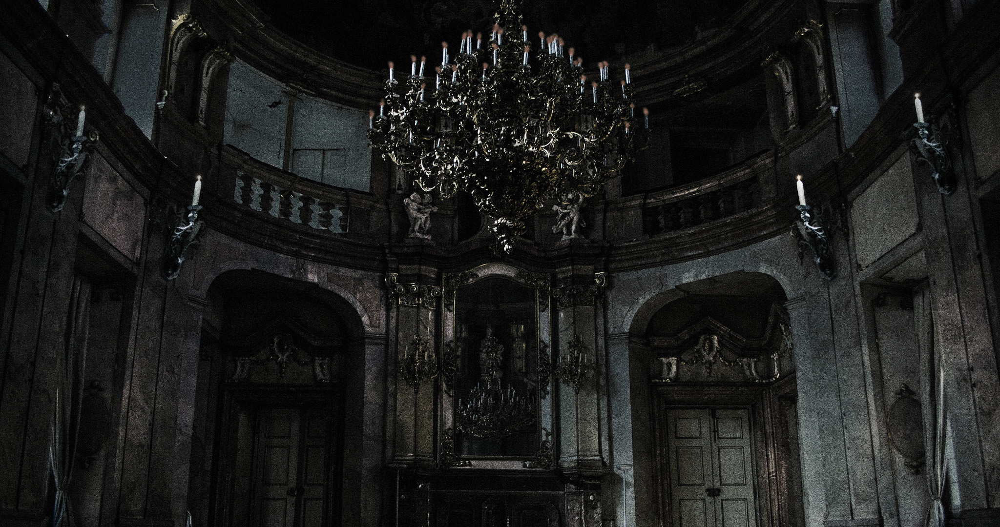

Focus Session
25:00
▶
❚❚
↺
Doll House
Fairy garden
Vampire ballroom
Ambient Sounds
Weather
▶
Rain
▶
Thunder
Atmosphere
▶
Fireplace
▶
Distant Echoes
▶
Whispers
▶
Distant Cry
Room Sounds
▶
Typewriter
▶
Ghostly Laughter
Midnight Requiem
Placeholder
Doll House

Garden

Ballroom
Doll House
Musicbox · haunted
01
The Requiem in D minor, K. 626 (Classic.de)
Wolfgang Amadeus Mozart
02
Lullaby / Wiegenlied - Op. 49, No. 4 (Classic.de)
Johannes Brahms
03
Badinerie - BWV 1067 (Classic.de)
Johann Sebastian Bach
04
For Elise - WoO 59 (Classic.de)
Ludwig van Beethoven